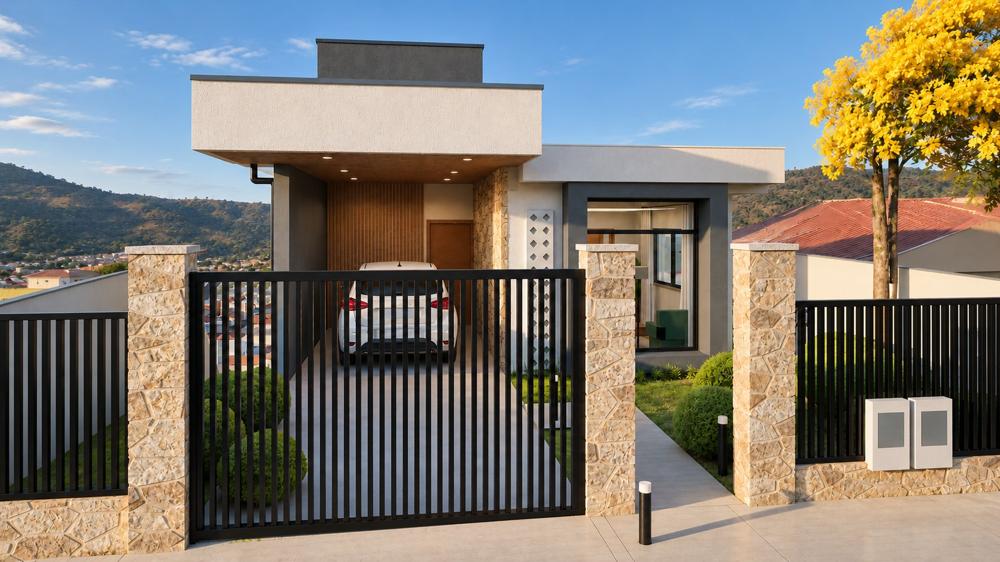

Casa da
Ana Paula
Residência térrea com subsolo gourmet e piscina de borda infinita voltada para a vista de Rio Espera.
Ande pela casa no celular.
Veja a fachada, o jardim e a vista aérea, mude a luz entre dia, fim de tarde e noite e faça o passeio a partir do portão. Abre em tela cheia, sem instalar nada.
Abrir a maquete 3DArquivo de cerca de 10 MB: em rede móvel, a primeira abertura pode levar alguns segundos.
A casa em 16 imagens.
Esta visualização mostra uma proposta de apresentação. Acabamentos, iluminação e elementos de paisagismo dependem de confirmação no projeto e não substituem as pranchas técnicas.
Todos os documentos do projeto.
31 arquivos em PDF (19,4 MB). Toque para abrir ou use "Baixar" para guardar no aparelho.
Apresentação
A casa explicada para a cliente: pedidos, ambientes, imagens e o que mudou em cada revisão.
Projeto executivo de arquitetura
Pranchas A1 para a obra, com cotas, níveis, detalhes e quadros. Somente arquitetura: estrutura, contenção e instalações ficam com os projetos complementares.
Pranchas do executivo, uma a uma
Cada prancha A1 em arquivo próprio.
- PDFPlanta baixa do térreoAP-ARQ-EX-001-R04 · 1 página · 167 kBBaixar
- PDFPlanta baixa do subsolo gourmet e área da piscinaAP-ARQ-EX-002-R04 · 1 página · 153 kBBaixar
- PDFPlanta de cobertura e detalhesAP-ARQ-EX-003-R04 · 1 página · 320 kBBaixar
- PDFCorte AA (longitudinal)AP-ARQ-EX-004-R04 · 1 página · 255 kBBaixar
- PDFCorte BB (longitudinal)AP-ARQ-EX-005-R04 · 1 página · 249 kBBaixar
- PDFCortes CC e DD (transversais)AP-ARQ-EX-006-R04 · 1 página · 345 kBBaixar
- PDFFachadas sul (frente) e norte (fundos)AP-ARQ-EX-007-R04 · 1 página · 367 kBBaixar
- PDFFachada oeste (lateral esquerda)AP-ARQ-EX-008-R04 · 1 página · 250 kBBaixar
- PDFFachada leste (lateral direita)AP-ARQ-EX-009-R04 · 1 página · 323 kBBaixar
- PDFVistas internas — banho da suíte e banheiro socialAP-ARQ-EX-010-R04 · 1 página · 244 kBBaixar
- PDFVistas internas — cozinhaAP-ARQ-EX-011-R04 · 1 página · 167 kBBaixar
- PDFVistas internas — gourmet / cozinha de roçaAP-ARQ-EX-012-R04 · 1 página · 182 kBBaixar
- PDFVistas internas — lavanderia e banheiro do subsolo gourmetAP-ARQ-EX-013-R04 · 1 página · 223 kBBaixar
- PDFEsquadrias — portasAP-ARQ-EX-014-R04 · 1 página · 175 kBBaixar
- PDFEsquadrias — janelasAP-ARQ-EX-015-R04 · 1 página · 156 kBBaixar
- PDFQuadro geral de esquadrias e detalhes típicosAP-ARQ-EX-016-R04 · 1 página · 211 kBBaixar
- PDFPaginação de piso — térreo e áreas externasAP-ARQ-EX-017-R04 · 1 página · 203 kBBaixar
- PDFPaginação de piso — subsolo gourmet e área da piscinaAP-ARQ-EX-018-R04 · 1 página · 234 kBBaixar
- PDFPlanta de forro — térreo e subsolo gourmetAP-ARQ-EX-019-R04 · 1 página · 113 kBBaixar
- PDFEscada lateral e guarda-corposAP-ARQ-EX-020-R04 · 1 página · 164 kBBaixar
- PDFMuros, portões e fechamento da frenteAP-ARQ-EX-021-R04 · 1 página · 170 kBBaixar
Estudo preliminar
As pranchas A3 do estudo que originou o executivo.
- PDFEstudo preliminar completoAs 6 pranchas A3 num único arquivo · AP-ARQ-Pranchas-R04 · 6 páginas · 792 kBBaixar
- PDFImplantação e situaçãoAP-ARQ-PL-001-R04 · 1 página · 139 kBBaixar
- PDFPlanta baixa do térreoAP-ARQ-PL-002-R04 · 1 página · 102 kBBaixar
- PDFCobertura e subsolo gourmet (fase 2)AP-ARQ-PL-003-R04 · 1 página · 108 kBBaixar
- PDFCortes AA e BBAP-ARQ-PL-004-R04 · 1 página · 140 kBBaixar
- PDFFachadas frente e fundosAP-ARQ-PL-005-R04 · 1 página · 132 kBBaixar
- PDFFachadas laterais · esquadrias · notasAP-ARQ-PL-006-R04 · 1 página · 177 kBBaixar